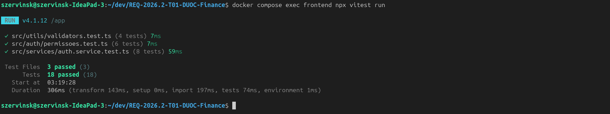

Critérios de Aceitação: Definition of Ready (DoR) e Definition of Done (DoD)¶
Este capítulo formaliza os acordos de trabalho da equipe Cascata Ágil para selecionar itens aptos à construção e verificar quando um incremento do DUOC Finance está concluído. Os critérios consideram o contexto sociotécnico da DUOC, a participação da cliente parceira Maria Beatryz e o processo RAD UI-First, constituindo o artefato transversal de Governança e Qualidade da Unidade 2 em atendimento à Seção 9 do Template Oficial da disciplina (Definition of Ready — DoR e Definition of Done — DoD).
Definition of Ready (DoR)¶
O DoR é o acordo de prontidão para iniciar a construção da lógica de negócio e da persistência definitiva de cada item do backlog; não é um requisito para iniciar qualquer atividade de desenvolvimento. No ciclo UI-First, a prototipagem do frontend com dados mockados e a validação da interface acontecem antes do DoR. A passagem para a implementação da lógica e da persistência só pode ocorrer quando todos os critérios abaixo forem atendidos e houver evidência registrada. Assim, o DoR não substitui a validação UI-First nem autoriza antecipar a construção de backend ou banco de dados.
Checklist operacional de entrada¶
| Verificação | Pergunta de controle | Evidência esperada |
|---|---|---|
| Problema e escopo claros | Está claro quem precisa da funcionalidade, qual problema operacional ela resolve, qual resultado é esperado e o que está fora do escopo? As pessoas envolvidas usam os termos de negócio com o mesmo significado? | História e descrição da Issue revisadas; termos e decisões relevantes registrados. |
| Sem ambiguidades impeditivas | Duas pessoas da equipe interpretariam da mesma forma os dados de entrada, as regras e o resultado esperado? Dúvidas que mudariam a solução foram resolvidas com a cliente ou registradas como decisão explícita? | Regras de negócio identificadas e decisões ou dependências documentadas. |
| Tamanho adequado ao incremento | O item entrega valor observável e cabe em um ciclo/incremento RAD planejado? Se não, foi dividido em fatias menores, cada uma verificável e priorizável? | Escopo e prioridade do item associados ao incremento no backlog/GitHub Projects. |
| História canônica e INVEST | A história segue “Como [papel], quero [ação], para [benefício]”? Ela atende aos critérios INVEST (Independente, Negociável, Valiosa, Estimável, Pequena e Testável)? | História registrada no backlog em formato INVEST, vinculada aos requisitos funcionais aplicáveis. |
| Critérios de aceitação objetivos | Cada critério descreve um resultado observável em lista estruturada de regras de negócio, podendo ser aprovado ou reprovado sem interpretação subjetiva? Os critérios contemplam fluxo principal, validações e limites operacionais? | Critérios de aceitação objetivos documentados na história de usuário e cenários de homologação associados. |
| Regras de negócio explícitas | Cálculos, permissões, estados, exceções, dados necessários e restrições estão identificados? Há regra financeira ou de acesso que precise de confirmação? | Regras de negócio referenciadas ou descritas no requisito; dúvidas bloqueadoras resolvidas. |
| Qualidade, dados e dependências | O contrato de dados preliminar (schemas JSON / DTOs de API) está estabelecido? Foram identificados os RNFs aplicáveis, dependências de integração, restrições legais e riscos? Seus critérios mensuráveis estão claros? | Contrato de dados e RNFs vinculados; critérios quantitativos referenciados no Capítulo 8, sem criar limites novos para o item. |
| Base visual preparada | A interface tem referência visual no Figma (identidade, tokens ou wireframe pertinente) e o fluxo completo foi estabelecido no Frontend, navegável e com dados sintéticos/mockados? | Link para Figma e preview do protótipo no Frontend associados à Issue. |
| Validação sociotécnica concluída | Maria Beatryz conseguiu percorrer o fluxo e validar campos, linguagem, sequência e resultado visual antes da implementação da lógica e da persistência? Os ajustes solicitados foram incorporados ou acordados? | Aprovação ou ressalvas registradas em ata/sessão; link, data e pendências associadas ao item. |
Decisão do portão: marque o item como Pronto (DoR) somente quando todas as respostas forem afirmativas e as evidências estiverem acessíveis à equipe. Se algum critério não for atendido, o item permanece em Refinamento; registre a dúvida, dependência ou ação pendente na Issue. A aprovação da tela não equivale à aprovação da lógica de negócio, que será verificada no DoD.
Registro de aplicação — Incremento 1 (Atualizado em 16/11/2026)¶
O checklist DoR foi aplicado e evidenciado para as histórias entregues no Incremento 1 (US01–US04, US13, US17–US19, US22, US23), com rastreabilidade direta para o catálogo, protótipo Figma, atas e Pull Requests de entrega:
| Verificação | Estado | Evidência Rastreável no Repositório |
|---|---|---|
| Problema e escopo claros | Atendido | Histórias US01–US04, US13, US17–US19, US22, US23 descritas no Catálogo Integrado e alinhadas aos gargalos TR-01 a TR-04. |
| Sem ambiguidades impeditivas | Atendido | Regras RN01–RN23 e decisões de escopo documentadas nos cards e na Ata 05. |
| Tamanho adequado ao incremento | Atendido | Itens priorizados no MVP na Priorização com estimativas de esforço até 16h. |
| História canônica e INVEST | Atendido | Todas as histórias seguem o formato "Como [papel], quero [ação], para [benefício]" nos cards do Catálogo. |
| Critérios de aceitação objetivos | Atendido | Critérios funcionais, DoR e DoD especificados por requisito no Catálogo e validados por suítes Vitest. |
| Regras de negócio explícitas | Atendido | Validações de CPF (RN01), RBAC (RN15/RN16), bloqueio de login (RF23) e anexos RVT (RN06) formalizadas. |
| Qualidade, dados e dependências | Atendido | Contratos DTO/Prisma (schema.prisma e migrations auth_usuarios_sessoes e rvt_apontamento_campo) e RNFs vinculados. |
| Base visual preparada | Atendido | Telas prototipadas no Figma (Node 1:3) e implementadas no Frontend React (PR #167 e PR #170). |
| Validação sociotécnica concluída | Atendido (Incr. 1) | Telas do Incremento 1 validadas presencialmente com Maria Beatryz na Ata 06 (02/10/2026) antes da construção do backend/persistência. |
Perguntas rápidas para refinamento¶
- Qual papel de usuário executa a ação e qual benefício operacional obtém?
- Que dados entram, que resultado deve ser apresentado e quais regras condicionam o fluxo?
- Como demonstrar objetivamente que cada critério de aceitação foi satisfeito?
- O item é pequeno o bastante para ser construído, verificado e demonstrado dentro do incremento planejado?
- A cliente validou o fluxo real no Frontend com mocks, e ficou registrado o que foi aprovado ou precisa mudar?
Definition of Done (DoD)¶
O DoD é o portão de saída: confirma que a história ou incremento está funcional, integrado, verificado e homologado pela cliente. Neste acordo, Concluído (Done) significa que a homologação ocorreu e foi aceita, além de todos os demais critérios aplicáveis terem sido verificados e registrados; estar apenas pronto ou apto para homologação não é suficiente. A publicação/entrega em produção não é implícita no Done e, quando fizer parte do escopo, deve seguir o processo de liberação correspondente.
Checklist operacional de conclusão¶
| Dimensão | Critério de conclusão | Evidência esperada |
|---|---|---|
| Incremento funcional | O fluxo da história está operável de ponta a ponta no ambiente definido para demonstração. A interface validada no DoR está integrada à lógica e à persistência previstas para o item; quando aplicável, está disponível em Staging. | Demonstração ou link do ambiente; PR/Issue identifica o incremento e seus componentes. |
| Critérios de aceitação | 100% dos critérios aprovados. Nenhum critério permanece sem execução, resultado ou justificativa acordada. | Resultado da verificação de cada critério/caso de teste ligado à Issue ou PR. |
| Código e inspeção por pares | O código segue os padrões do repositório e tipagem estrita; passou por inspeção estruturada por pares, adaptada à realidade da equipe e inspirada no fluxo de Fagan; os checks de CI (lint e types) foram aprovados. | Checklist de inspeção preenchido no PR, registro de achados e respectivas resoluções, aprovação de revisor diferente do autor e checks de CI aprovados. |
| Testes automatizados | Testes automatizados pertinentes à alteração foram executados e aprovados. Regras de domínio e cálculos têm cobertura de testes apropriada; integrações e regressões afetadas foram verificadas. | Relatório de execução do CI e links/saídas dos testes. |
| Requisitos não funcionais | Os RNFs aplicáveis ao incremento e ao ambiente vigente (ex.: RNF02, RNF03, RNF04, RNF07, RNF13, RNF14, RNF20) foram verificados contra seus critérios mensuráveis via testes automatizados ou medições locais/Staging. Requisitos exclusivos de infraestrutura produtiva (ex.: SLA 99,5% em RNF18 ou backup em produção em RNF17) são avaliados na etapa de implantação (Cutover). |
Resultado de testes Vitest, medições curl ou inspeções vinculadas ao PR e ao card do RNF no Catálogo. |
| Documentação — Docs as Code | Documentação afetada foi atualizada no repositório/MkDocs, incluindo orientações operacionais ou técnicas necessárias para compreender e usar o incremento. A compilação local do site termina sem warnings. | Alterações documentais no PR e saída bem-sucedida de mkdocs build --strict. |
| Homologação sociotécnica | Ao fechamento de cada incremento RAD consolidado, o fluxo é demonstrado à cliente em ambiente navegável (Docker/Staging) com dados sintéticos, registrando aceite ou ajustes em ata/issue. (Não exigida individualmente a cada commit ou PR técnico intermediário.) | Ata de validação do incremento ou registro de sessão UAT com a cliente Maria Beatryz. |
| Rastreabilidade e encerramento | Requisito, história, critérios de aceitação, testes e PR permanecem vinculados. Pendências não impeditivas, se houver, têm responsável, prioridade e destino acordados; não são declaradas como concluídas por omissão. | Links cruzados no GitHub Projects/Issue/PR e registro explícito de pendências acordadas. |
Decisão do portão: marque como Concluído (DoD) somente quando todos os critérios aplicáveis forem aprovados, a homologação tiver sido realizada e aceita pela cliente e as evidências estiverem registradas. Falha ou homologação pendente mantém o item em Verificação ou Validação, conforme o fluxo; registre o defeito ou a pendência e retorne à construção/refinamento necessário. Um RNF não aplicável ao escopo deve ser identificado como tal, não tratado como aprovado sem verificação.
Procedimento e registro da inspeção por pares¶
A equipe realizará uma inspeção estruturada por pares, inspirada nas etapas de preparação, inspeção, tratamento de achados e acompanhamento do método de Fagan, sem afirmar que aplica o método formal completo. O registro será mantido no próprio Pull Request (PR) do GitHub:
- Preparação: o autor abre o PR, vincula a Issue e resume o escopo e os critérios de aceitação afetados.
- Inspeção: pelo menos uma pessoa diferente do autor revisa as alterações e preenche no PR um checklist com o resultado de cada verificação (aprovado, ajustar ou não aplicável) e uma referência à evidência ou ao trecho revisado. O checklist verifica regras de negócio e critérios de aceitação, tratamento de erros e limites, segurança/RNFs aplicáveis, testes e documentação.
- Tratamento e acompanhamento: achados são registrados como comentários ou solicitação de alterações no PR. O autor corrige ou responde a cada achado; o revisor confirma a resolução antes de aprovar. Itens não aplicáveis devem vir acompanhados de justificativa.
O PR aprovado, com checklist preenchido, comentários/alterações resolvidos e verificações de CI aprovadas, é o registro comprobatório da inspeção. A aprovação do PR não substitui a homologação pela cliente nem os demais critérios do DoD.
Registro mínimo de evidências¶
Para cada item concluído, a Issue ou PR deve permitir localizar:
- História de usuário e requisitos/RNs/RNFs relacionados;
- Critérios de aceitação e resultados dos testes correspondentes;
- Evidência da validação visual do DoR e da homologação do DoD;
- PR aprovado, checklist e resolução dos achados da inspeção por pares, verificações automatizadas e estado de integração;
- Atualização documental pertinente e resultado do build MkDocs.
Aplicação no processo RAD e rastreabilidade¶
Os portões se aplicam a cada história/incremento, não apenas aos marcos acadêmicos. No ciclo UI-First, primeiro se planeja e refina a história, estabelece-se a interface com base no Figma e prototipa-se no Frontend com mocks; a validação pela cliente satisfaz a etapa visual do DoR. Só então se constrói a lógica e a persistência. Em seguida, o incremento passa por verificação, demonstração/homologação e refinamento do ciclo seguinte.
O acordo complementa as fases e a adaptação do processo RAD descritas no Capítulo 4 — Estratégias de Engenharia de Software e o ciclo UI-First, o fluxo Backlog do Produto → Refinamento → Pronto (DoR) → Em Desenvolvimento → Em Verificação → Em Validação → Concluído (DoD) e o planejamento por incrementos descritos no Capítulo 6 — Cronograma. Os critérios de requisitos, regras de negócio e métricas de qualidade devem ser rastreados à especificação do Capítulo 8, e a interação de validação/homologação segue o processo com a cliente no Capítulo 7.
Na Unidade 2 / Incremento 1, o marco de 15/10/2026 associa telas homologadas pela cliente, DoR, DER e backlog INVEST. O marco acadêmico é um ponto de controle; não substitui o avanço contínuo dos ciclos RAD nem dispensa o DoD de cada incremento.
Registro da Aplicação do DoD — Incremento 1 (Atualizado em 16/11/2026)¶
A tabela abaixo registra a comprovação objetiva de cada critério do DoD para os itens do Incremento 1 (RF01–RF04, RF13, RF17–RF19, RF22, RF23), com redirecionamento direto para os Pull Requests onde constam os prints, checklists e saídas de execução:
| Critério do DoD | Situação Atual | Evidência Comprobatória Direta (PR / Artefato) |
|---|---|---|
| Incremento funcional (Docker/Staging) | Atendido | Banco PostgreSQL (db), API NestJS (backend:3000) e Frontend React (frontend:5173) operacionais; telas integradas em PR #167, PR #170 e PR #172. |
| Testes automatizados (Backend e Frontend) | Atendido | 107/107 testes backend aprovados em 15 suítes Vitest + 18/18 testes frontend aprovados em 3 suítes, registrados no PR #172 e validados em CI no PR #168. |
| Código, tipagem e inspeção por pares | Atendido | Checks lint, tsc --noEmit e npm run build aprovados em .github/workflows/ci.yml (PR #168) e revisão por pares nos PRs #167, #170 e #172. |
| RNFs verificáveis no incremento | Atendido | RNF02 (latência /api/health em 0,337s, abaixo de 2,0s), RNF03 (bcrypt custo >= 10 em senha.util.spec.ts), RNF07 (SHA-256 + MIME real em PR #170), RNF13 (JWT 900s), RNF14 (RolesGuard HTTP 401/403 em PR #172) e RNF20 (validação DTO). |
| Documentação — Docs as Code | Atendido | Catálogo de requisitos atualizado com evidências visuais (PR #174) e mkdocs build --strict sem erros/avisos. |
| Homologação sociotécnica do incremento | Pendente de sessão UAT | Telas validadas previamente na Ata 06; homologação do fluxo integrado em Staging agendada na sessão de UAT com Maria Beatryz (27/11/2026). |
Galeria de Evidências Visuais (Execução, Testes, Latência e CI/CD)¶
 Containers Docker ativos (PostgreSQL, NestJS e Vite)
Containers Docker ativos (PostgreSQL, NestJS e Vite)
 Backend Vitest: 15 suítes e 107/107 testes aprovados
Backend Vitest: 15 suítes e 107/107 testes aprovados


Frontend Vitest: 3 suítes e 18/18 testes aprovados Latência medida (20ms / 11ms HTTP 401) e mkdocs build --strict
Latência medida (20ms / 11ms HTTP 401) e mkdocs build --strict
 Pipelines GitHub Actions (CI e Deploy GH Pages)
Pipelines GitHub Actions (CI e Deploy GH Pages)
 Revisão por pares e checklist de Pull Request
Revisão por pares e checklist de Pull Request
Histórico de Versão¶
| Versão | Data | Descrição | Autor(es) | Revisor(es) |
|---|---|---|---|---|
1.0 |
07/09/2026 | Estruturação inicial dos acordos de Definition of Ready (DoR) e Definition of Done (DoD). | Matheus Ribeiro Szervinsk | Matheus Ribeiro Szervinsk |
1.5 |
13/10/2026 | Auditoria de governança metodológica: critérios objetivos de aceitação no DoR e inspeção Fagan no DoD. | Matheus Ribeiro Szervinsk | Eric Araújo |
2.0 |
28/10/2026 | Consolidação do status de aplicação do DoR na US04 e esclarecimento dos registros comprobatórios de DoD. | Giovana Ferreira Santos | Matheus Ribeiro Szervinsk |
2.1 |
17/11/2026 | Atualização dos registros reais de DoR e DoD do Incremento 1 com links diretos aos PRs (#167, #168, #170, #172, #174), resultados de testes (107 backend / 18 frontend), latência medida e ajuste da homologação sociotécnica por incremento. |
Matheus Ribeiro Szervinsk | Lucas Zanetti |